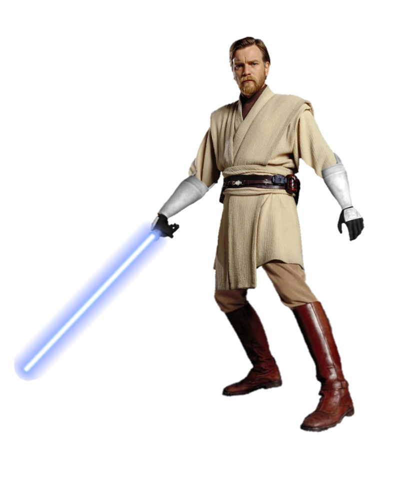

Começando como um Padawan dedicado,
ele sobreviveu à queda da Ordem Jedi
ao se exilar em Tatooine. Ele dedicou sua vida a
proteger Luke Skywalker e a treinar a última esperança da
galáxia para restaurar o equilíbrio.